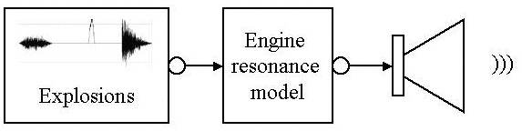

A model of a four-stroke combustion engine. The driving force is obtained by constructing a looping audio sample, divided into four regions which represent the 4 stages of the engine: An intake stroke, a compression stroke (silence), a combustion stroke, and an exhaust stroke. The intake stroke was modeled as white noise enveloped with a bell curve. The exhaust stroke is modeled as white noise, rapidly decaying in time, inspired by a high pressure gas mixture being released when the valve opens. The combustion stroke consists of an enveloped burst of 1/f noise.
The sample is looped at adjustable rate, corresponding to the running speed of the engine. For added realism the engine is allowed to "misfire" once in a while, which is implemented by skipping a section in the looped sample.
The engine resonance frequencies and dampings can be scaled with the bottom two sliders. When the sound gets too soft press Stop/Start to reset AGC.
|  |
Source code:
import jass.render.*;
import jass.engine.*;
import jass.generators.*;
import java.net.*;
/**
Combusion engine model
@author Kees van den Doel (kvdoel@cs.ubc.ca)
*/
public class EngineApplet extends AppletController {
ErraticLoopBuffer cylinders;
SourcePlayer player;
ModalObjectWithOneContact engineResonances;
boolean isOn = true;
float factor=1;
String syfile = "../data/stick.sy";
String wavfile = "../data/car2.wav";
public void setNSliders() {
nsliders = 4;
}
public void setNButtons() {
nbuttons = 1;
}
public void init() {
super.init();
syfile = getParameter("syfile");
wavfile = getParameter("wavfile");
}
public void start() {
float srate = 44100.f;
int bufferSize = 128*4;
int bufferSizeJavaSound = 8*1024;
URL codebase = getCodeBase();
URL syurl = null;
URL wavurl = null;
try {
syurl = new URL(codebase,syfile);
wavurl = new URL(codebase,wavfile);
} catch(MalformedURLException e) {
System.out.println(e+" Malformed URL: " +codebase+" "+ syfile);
}
cylinders = new ErraticLoopBuffer(srate,bufferSize,wavurl);
player = new SourcePlayer(bufferSize,bufferSizeJavaSound,srate);
ModalModel mm = null;
try {
mm = new ModalModel(syurl);
} catch(java.io.IOException e) {
System.out.println(this+" "+e);
}
engineResonances = new ModalObjectWithOneContact(mm,srate,bufferSize);
try {
player.addSource(engineResonances);
engineResonances.addSource(cylinders);
} catch(SinkIsFullException e) {
}
float speed0 = 3;
cylinders.setSpeed(speed0);
float beatupness0 = 0.04f;
String[] names = {"Speed ", "Beatupness ", "Damping ", "Size "};
double[] val = {speed0, beatupness0, 1, 1 };
double[] min = {speed0, 0, .5, .4 };
double[] max = {15, .1, 1, 2 };
cylinders.setMisfireProb(beatupness0);
setValues(val,min,max,names);
jButton[0].setText ("Stop");
player.start();
isOn = true;
}
protected void jButtonMousePressed (int k,java.awt.event.MouseEvent evt) {
switch(k) {
case 0:
if(isOn) {
jButton[0].setText ("Start");
isOn = false;
cylinders.setVolume(0);
} else {
jButton[0].setText ("Stop");
isOn = true;
player.resetAGC();
cylinders.setVolume(1);
}
break;
}
}
protected void onSlider(int k) {
switch(k) {
case 0:
cylinders.setSpeed((float)(super.val[0]));
break;
case 1:
cylinders.setMisfireProb((float)super.val[1]);
break;
case 2:
engineResonances.setDamping((float)super.val[2]);
break;
case 3:
engineResonances.setFrequencyScale((float)super.val[3]);
break;
}
}
}